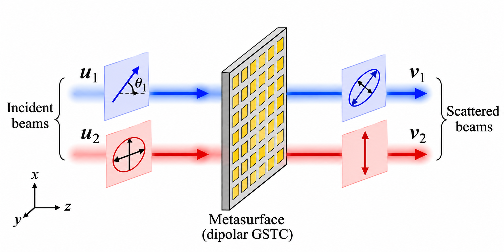
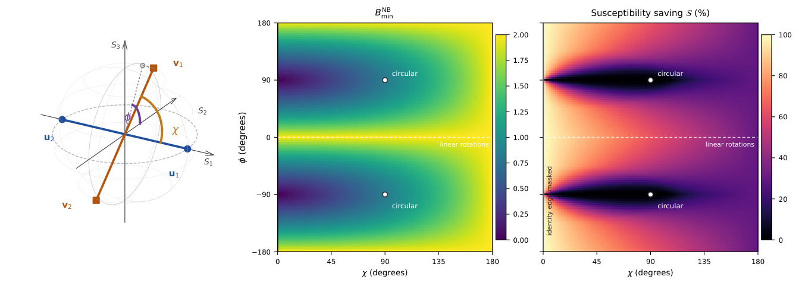
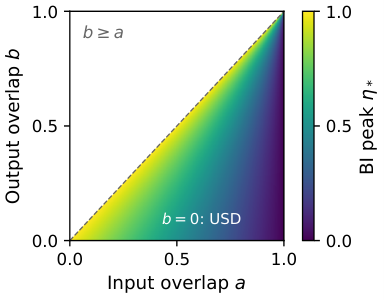

Selected analytical susceptibility-bound results are formally verified in Lean 4, with LLM-assisted development; code and theorem statements are released on GitHub.
Abstract
Metasurfaces are increasingly employed for sophisticated polarization transformations, including general unitary and nonunitary Jones operations. Despite substantial advances in analytical synthesis methods, inverse design of these transformations remains challenging. Here, we show that the particular mathematical structure of Jones polarization transformations makes optimal effective-susceptibility synthesis analytically tractable within the generalized sheet transition condition (GSTC) framework. For reciprocal, lossless dipolar metasurfaces, we establish exact feasibility and global minimum attainment, and derive sharp effective-susceptibility bounds for representative unitary and nonunitary transformations. We identify when magnetoelectric coupling lowers the minimum susceptibility, when it offers no resource advantage, and how the required material response depends on the prescribed polarization transformation. Applications to polarization rotations, tunable compensators, and polarization-state separation, including unambiguous discrimination, demonstrate sharp physical limits and material-resource trade-offs. These results provide geometry-independent theoretical benchmarks that can guide numerical inverse design and the selection of metasurface architectures.
Problem
Metasurfaces implementing general unitary and nonunitary Jones polarization transformations are hard to inverse-design. It is also unclear how much constitutive (susceptibility) response a given transformation fundamentally requires, and when magnetoelectric coupling helps.
Approach
Within the generalized sheet transition condition (GSTC) framework for reciprocal, lossless dipolar metasurfaces, the authors define a spectral susceptibility budget. They use the structure of Jones transformations to reduce the minimization to tractable problems, such as a one-variable phase minimization for unitary tasks. Bianisotropic (BI) and non-bianisotropic (NB) sheet classes are compared. Selected analytical relations are formally verified in Lean 4.

Figure 1: Metasurface conversion, susceptibility classes, and Jones-operator geometry. (a) Metasurface schematic for the prescribed two-state transformations. (b) The BI and NB susceptibility matrices, with matching colors denoting repeated independent entries. (c)–(f) Four polarization-conversion cases represented by one Poincaré sphere each: unitary transformations of orthogonal (c) and nonortho
Results
They prove exact feasibility, global minimum attainment and sharp effective-susceptibility bounds for representative unitary and nonunitary transformations. The bounds identify when magnetoelectric coupling lowers the minimum budget and when it gives no advantage. Applications include polarization rotations, tunable compensators and polarization-state separation such as unambiguous discrimination.

Figure 2: Minimum rotationally invariant spectral susceptibility budget for unit-efficiency linear-to-elliptical conversion between orthogonal polarization bases. (a) Poincaré-sphere geometry; (b) minimum NB spectral budget; (c) fractional susceptibility saving \mathcal{S} obtained with BI sheets. White circles identify circular-output states, where the BI and NB spectral minima coincide; the dash

Figure 4: Polarization-state separation and susceptibility requirements. (a) Aligned and rotated output frames for the same input pair; blue and orange arrows denote incident and transmitted Jones states, and dashed arrows denote reflection. (b) BI maximum transmission efficiency versus the input and output overlaps a and b ; white denotes b\geq a , outside the separation domain. (c) NB reciprocit